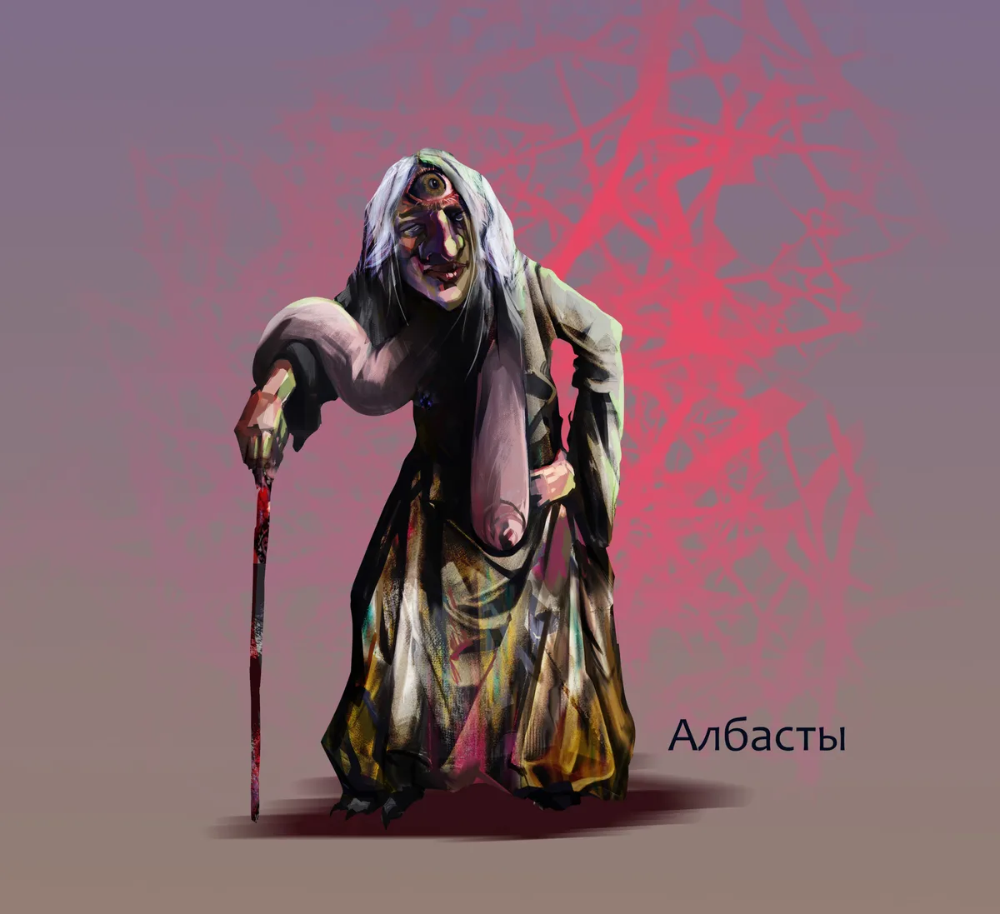
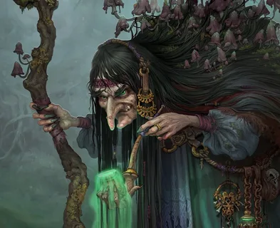
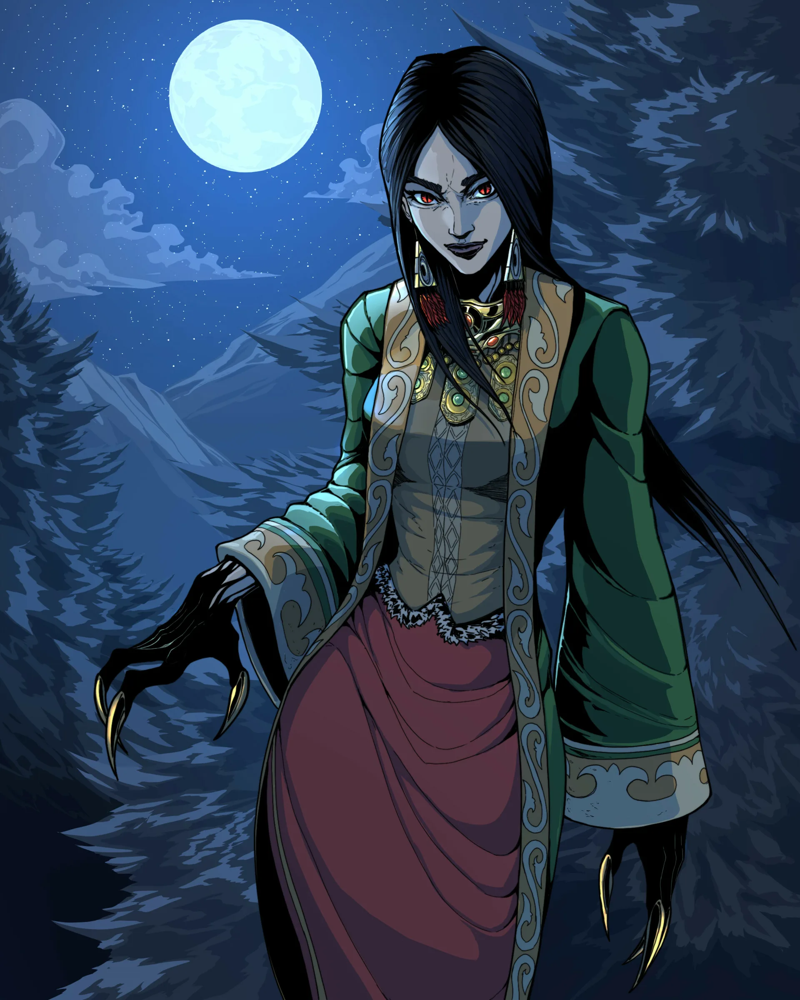
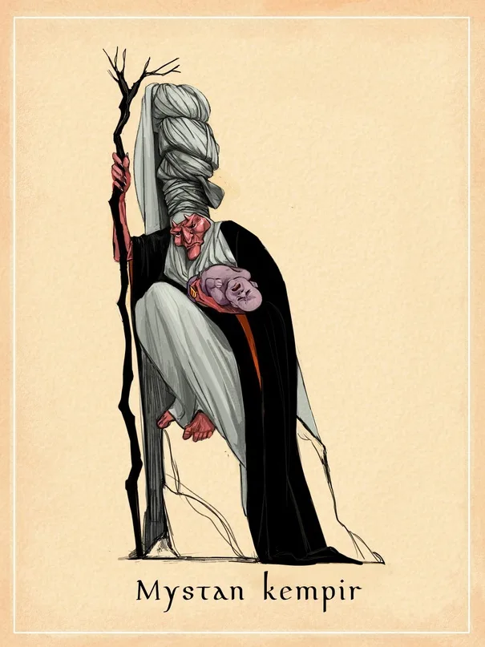
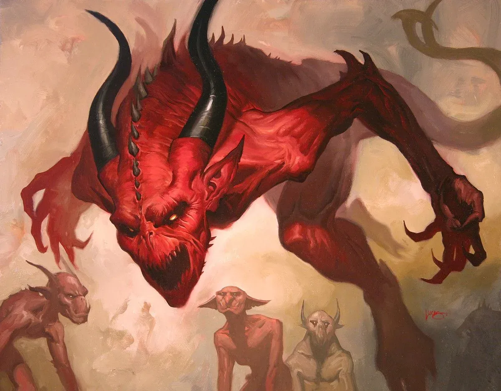
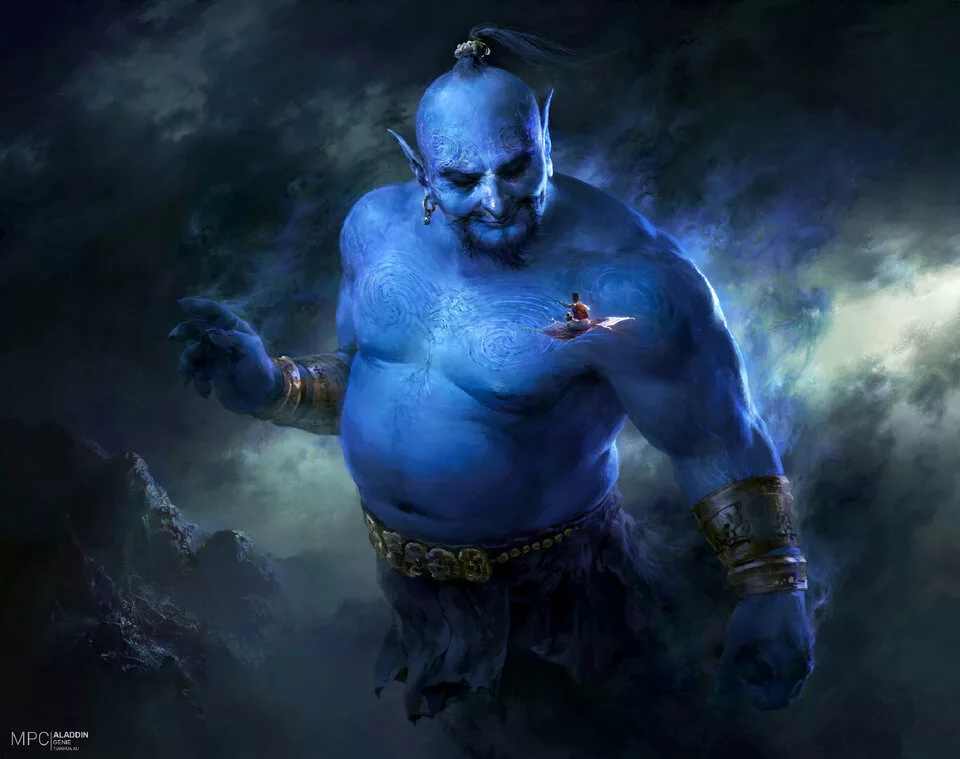
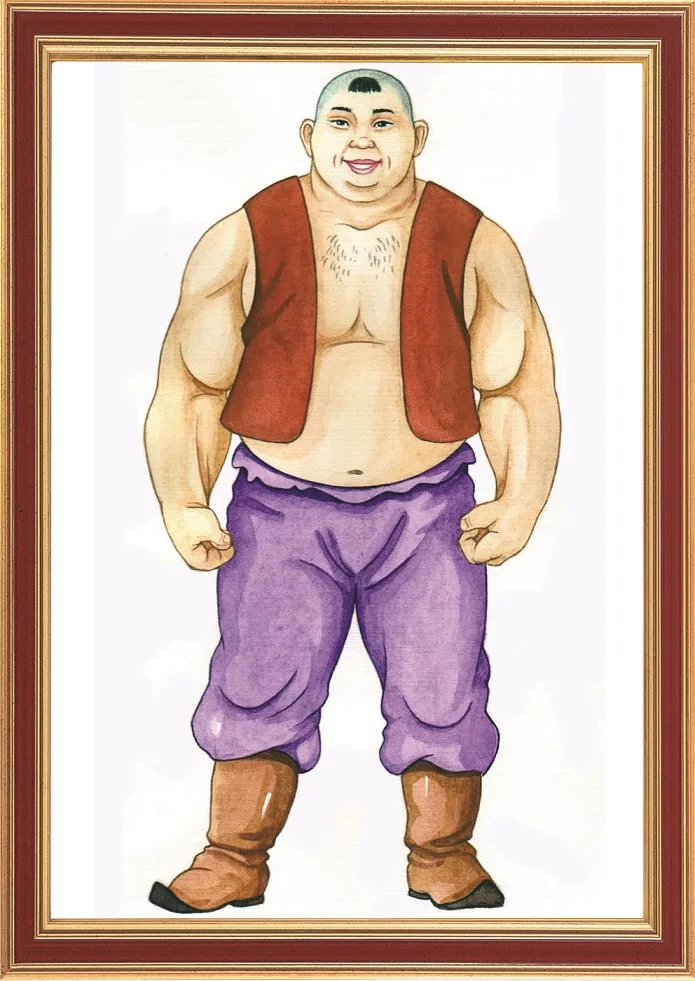
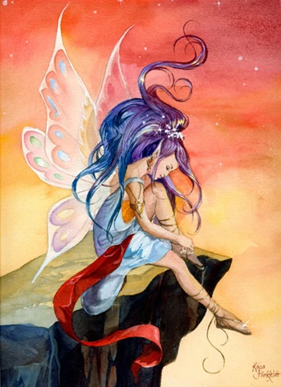

Разделение мифологических персонажей с демонологическими чертами.
Албасты, у турок, казанских, крымских и западносибирских татар, казахов, башкир, тувинцев, алтайцев, узбеков (албасты, алвасти), туркмен (ал, албассы), киргизов (албарсты), каракалпаков, ногайцев (албаслы), азербайджанцев (хал, халанасы), кумыков (албаслыкъатын), балкарцев и карачаевцев (алмасты) злой демон, связанный с водной стихией. У турок назывался также ал, ал-ана, ал-кары, ал-кузы, у тувинцев и алтайцев - албыс, у казахов, каракалпаков, киргизов, узбеков - марту (мартуу, мартув, мартук), узбеков Зеравшанской долины - сарыкыз («жёлтая дева»), у западносибирских татар - сары чэч [«желтоволосая (дева)»]. А. обычно представлялся в облике уродливой женщины с длинными распущенными светлыми волосами и такими длинными грудями, что она закидывает их за спину. Существовали поверья, что А. может превращаться в животных и в неодушевлённые предметы. Казанские татары считали, что А. принимает облик воза, копны сена, ели.Киргизы и казахи различали чёрную (кара), наиболее вредоносную, и жёлтую (сары), или вонючую (сасык), А.В. Н. Басилов.
Жалмауыз кемпир - это демоническое существо в мифологии казахов и киргизов, изображаемое в виде старухи, часто с семью головами. Обычно олицетворяет злое начало. Жалмауыз кемпир часто является людоедкой и похитительницей детей. В образе лёгкого она плавает на поверхности воды, а когда приближается человек, превращается в семиглавую старуху, чтобы хватать его и вынуждать отдать сына (как в сказке "Ер-Тостик"). (Источник: «Мифы народов мира».)
Жезтырнак — женский злой демонический персонаж казахской мифологии и некоторых соседних с ними тюркских народов . Обычно представляется в облике красивой молодой девушки или женщины с медным носом и медными когтями, обладавших злобным характером и невероятной силой. Жезтырнак кроме чудовищной силы, обладает громким пронзительным голосом и своим криком убивает птиц и мелких животных. Очень замкнутая, молчаливая красавица. Что-то вроде вампирши. Но в отличие от европейской нечисти жезтырнак не боится серебра – её одежда полна золотых и серебряных украшений. Своих рук с длинными металлическими когтями она никогда не показывает – прячет их под длинными рукавами. Жезтырнак гипнотизирует человека холодным, немигающим взглядом, и когда он засыпает, впивается в него своими железными когтями, высасывая всю кровь. Эти существа невероятно мстительны и злопамятны. Если жезтырнак удается убить, то за неё начинает мстить её супруг – сорель. А в случае и его гибели человека преследуют их осиротевшие дети.
Мыстан кемпир - это безобразная ведьма в мифологии казахов. Она является причиной всех злоключений героя: подменяет детей, во время состязаний пытается хитростью обогнать бегуна, пожирает узников, которых содержит в подземном царстве, и так далее. Представления о Мыстан кемпир, очевидно, восходят к культу матери-покровительницы, отражая позднюю стадию развития этого персонажа (ср. близкую ей жалмауыз кемпир). Образ Мыстан кемпир сохранился преимущественно в сфере волшебной сказки. (Источник: «Мифы народов мира».)
Шайтан (араб.) - это одно из имен Иблиса и также одна из категорий джиннов в мусульманской мифологии. Понятие Шайтан родственно библейскому термину сатана. Под Шайтаном понимают категорию злых духов, созданных из огня и дыма, которые враждебны Аллаху и человеку. Вместе со своим господином Иблисом Шайтаны обречены на адские муки после Судного дня. Шайтаны отвлекают людей от благочестивых дел и подбивают их на греховные поступки. Шайтаны подстрекали к грехам и ошибкам многих персонажей Священной истории, например, пророка Юсуфа. Часть Шайтанов подчинилась пророку Сулейману, но затем вернулась к неблагочестивым делам. Признано, что у каждого человека есть свой Шайтан и свой ангел, ведущие борьбу за сердце человека. Шайтаны могут появляться в человеческом обличье, иногда имеют имена. Следующие уговоры Шайтанов попадают в ад. Чтобы отогнать Шайтана, достаточно призвать на помощь Аллаха. Распространено поверье, что поэты и прорицатели повторяют слова, внушаемые им Шайтанами. Авторы: В. О. Бобровников
Джинн (араб.) - это общее наименование для духов в мусульманской мифологии, которые созданы из чистого пламени и наделены Аллахом сверхъестественной силой и разумом. Коран делит джиннов на добрых, принявших ислам, и злых, враждебных Богу и человеку (см. Коран, 72:17–1, 46:29/28–32/31). Джинны обоего пола живут в пустыне и горах. К ним относят духов гуль, ифрит, силат, иногда также шайтанов. Заимствованные из языческих верований Аравии, джинны стали любимыми персонажами мусульманского фольклора и художественной литературы, включая сказки "1001 ночь" и магические повествования. Авторы: В. О. Бобровников
Дию - мифический персонаж. Телесная, сильная, магическая душа представлена в виде хозяина. Владелец (ведьма и т. д.) делает удивительные вещи по своему желанию-медь. Дию чаще всего встречается в виде героя сказок. В фантастических сказках казахского народа Дию иногда называют Дау.Қазақ әдебиеті. Энциклопедиялық анықтамалық. - Алматы: «Аруна Ltd.» ЖШС, 2010.ISBN 9965-26-096-6
Фея-это мифологический образ, который может войти в образ человека, души и животного, сосуществующего вне мирского измерения. Фея иногда используется как персидский эквивалент слова демон. Интерпретируется как злая сила, созданная сверхъестественным. По старым поверьям, человека ждут разные пороки, невидимые невооруженным глазом. От их заговора можно защищаться, опираясь только на обладателей священных добродетелей.Обитель фей представляет собой труднопроходимую местность, похожую на вершину горы Кап, где человек не мог добраться до конца. У них есть крылья, и они могут мгновенно летать куда угодно. В некоторых мифических легендах феи также обитают под водой. Говорят, что они русалки. Қазақстан»: Ұлттық энциклопедия / Бас редактор Ә. Нысанбаев – Алматы «Қазақ энциклопедиясы» Бас редакциясы, 1998 ISBN 5-89800-123-9, VII том
